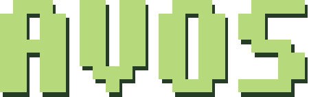
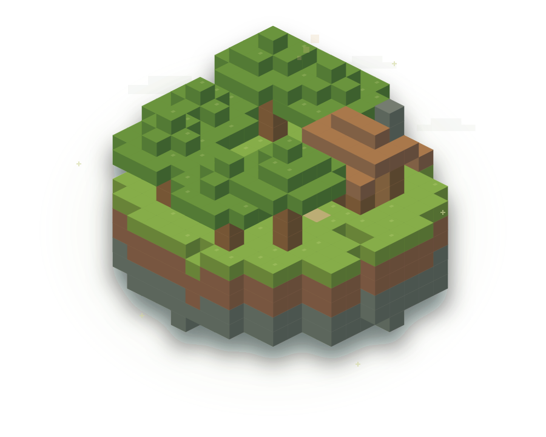

Скачай архив
Моды, ресурспаки и шейдеры уже в одном ZIP. Скачай и распакуй его.
Забрать сборку
Уютный Minecraft, в котором хочется
пропасть на вечер. Вместе с друзьями.
Я уже собрал моды, настроил анимации и шейдеры.
Тебе осталось скачать, заменить файлы и зайти.

БЕЗ ТАНЦЕВ С БУБНОМ
Моды, ресурспаки и шейдеры уже в одном ZIP. Скачай и распакуй его.
Забрать сборкуЗакрой игру. Убери старую папку mods и перенеси содержимое архива в папку игры с заменой файлов.
mods, config, resourcepacks, shaderpacks и options.txt. Все они лежат прямо в архиве. Свою папку saves трогать не нужно.
Выбери Forge 1.20.1 в лаунчере, нажми «Играть» и подключись к нашей сети и серверу.
Адреса для входаЗДЕСЬ ХОРОШО ЗАЛИПНУТЬ
Деревья падают с анимацией, за окном стучит дождь, а животные двигаются живее.
Лесные звуки · Weather Glass · Новые биомыГотовь блюда, заваривай чай и устраивай общий ужин. Даже у еды теперь своя анимация.
Kaleidoscope Cookery · Immersive EatingОтмечай находки колёсиком. Двойной клик — срочный сигнал, который заметят и услышат друзья.
Карта · Общие метки · Тревожные сигналыСОБИРАЕМСЯ В ОДНОМ МИРЕ
Сначала подключись к сети ZeroTier.
Потом добавь наш сервер в Minecraft.
В ZeroTier вставляй этот код в поле Network ID.
Сетевая игра → Добавить сервер → Адрес сервера.
Если ZeroTier показывает ACCESS_DENIED, напиши Максу — он подтвердит устройство. Пароль сети вводить не нужно.
ЕСЛИ ЧТО-ТО НЕПОНЯТНО
mods и config. Саму игру перед заменой файлов закрой.